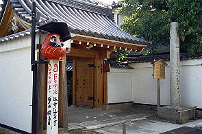

法輪寺/京都府京都市
ダルマさんのお寺である。
ダルマさんというのは達磨大師という禅の始祖である。インド人なんだって。やっぱ朝からカレーですか？
それはそれとしてこんなに偉い達磨大師なのに日本においてはいつの間にか手足をもがれてダルマさんになって、にらめっこの相手になったり達磨さんが転んだとかいわれたり、達磨落しにされたりしてかなり舐められている、というか親愛の明かしという事なんでしょうか。
考えてみたらミャンマーでもダルマさんらしきモノがあったので、もしかしたらこの舐められっぷりは日本だけの現象ではないのかも。
京都にある法輪寺は通称達磨寺といわれていて、文字どおり境内は達磨像のオンパレードである。

入口。寺は大通りから一本入った住宅地の一画にあり、差程広くはないがめくるめく達磨世界が繰り広げられている。
門の脇に掲げられた達磨さんがこの寺の達磨に賭ける思いを象徴しているようないないような。
ちなみに右の石柱には「三國随一 起上り
だるまてら」とありました。
境内に入るといきなりダルマさんの石彫像。周りには十二支の干支が並べられていて恐らく生れ年の干支にお参りしてくださいシステム。
↑これは衆聖堂という建物。
朱塗りの二階建ての新しい建物。拝観順路的にはこの建物を一回りしてから本堂に到る。
衆聖堂という建物が一般的にどういう目的のお堂かよく判らないのだが、ココのはズバリだるまコレクションルームと化していた。
一階内部。暗くて申し訳ないが、ダルマづくしである。中央に達磨大師像、後ろには十六羅漢像、そして達磨だるまダルマ・・・
だるま堤灯なんて初めて見たぞ。
ダルマさんに何やら札が張り付け放題張り付けてあって雪ダルマに・・・
女の子ダルマ。ミャンマーで見ただるまはこんな感じだった。何故かビデオデッキの上に置かれてました。

部屋の大半を埋め尽くすダルマコレクション。一番秀逸だったのがコレ。格納式だるま。サンダーバード2号みたいだぞ。
その他古今東西ダルマ大集合のダルまにあっぷりを発揮していて、大変楽しい。
ちなみに二階は布団を掛けられた涅槃像とマキノ省三や田中絹代などの映画人を祀るキネマ殿がある。
衆聖堂からとなりの本堂に行くと、庭園があった。ダルマコレクションで火照った目玉をクールダウンさせるべくしばし縁側で庭園を眺める。
しかし視界の端に座布団を背負った牛がいて何か落ち付かないぞ。

境内はまさにだるまづくし。ピアスが素敵だ。
本堂から衆聖堂を経て一回外に出る。衆聖堂の向いにはだるま堂が。
中央にやけに大きなダルマさんが見える。
・・・と思ったら賽銭箱でした。
ここもダルまにあの牙城。棚には民芸品のダルマさんがズラリと並べられている。
女性のダルマさんというのは一体どういう了見なのだろうか。よく判らないがこれもアリなような気がする。
元々偉いお坊さんなのにキャラクター化してお寺を飛び出し子供の遊びや縁起物に姿を変えた達磨大師。
本人の意志はどうであったかはともかく私はこの達磨現象は大好きです。
2002.5.
珍寺大道場 HOME